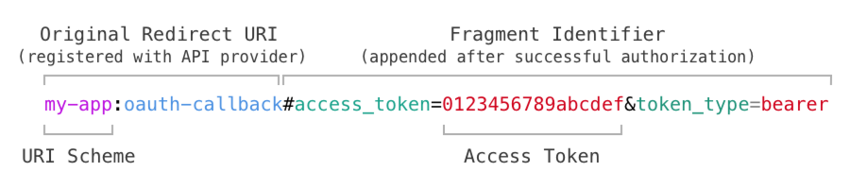

Working with REST APIs
Not all REST APIs provide a ready-to-use JavaScript wrapper. Even when they do, it might rely on browser- or Node.js-specific features, meaning it won't work with Fuse straight out of the box.
This guide will take you through the general process of creating your own wrapper for a REST API. Be aware that all APIs are different, and thus we can't give you a general recipe. This article is rather intended to give you an idea of how to approach this problem, and the code snippets should be thought of as a starting point for you to build on. Always read the documentation for your particular REST API carefully.
Getting started
When working with a REST API, we will be doing a lot of HTTP requests to the same server with similar parameters.
Under the hood, we are going to use fetch() to make HTTP requests.
For this guide, we'll also assume that all responses from the API are encoded as JSON (although this might not always be the case).
To avoid duplicating too much code, we'll create a small layer of abstraction on top of fetch().
var ROOT_URL = "https://api.example.com/v2/";
function apiFetch(path, options) {
var url = encodeURI(ROOT_URL + path);
if(options === undefined) {
options = {};
}
// If a body is provided, serialize it as JSON and set the Content-Type header
if(options.body !== undefined) {
options = Object.assign({}, options, {
body: JSON.stringify(options.body),
headers: Object.assign({}, options.headers, {
"Content-Type": "application/json"
})
});
}
// Fetch the resource and parse the response as JSON
return fetch(url, options)
.then(function(response) { return response.json(); });
}
This apiFetch function prepends the API's root URL and serializes the body as JSON (if one is provided), before sending off the request. It also attempts to parse the response as JSON upon completion.
Note that we are making somewhat heavy use of the Object.assign() function.
This is to avoid changing the properties of the options object that was passed in to the function – instead copying all the properties over to a new object and changing that.
Now that we have our tiny layer of abstraction in place, we can begin using that abstraction to implement the individual methods. This is also a good time to talk about how REST APIs often are structured.
REST APIs usually expose collections of resources, where each resource can be referenced by a unique id. Interacting with a resource is done by sending an HTTP request to the URL that represents the resource. The method of the HTTP request determines which action to perform with the resource.
Let's consider an example. Say we are dealing with an API for a blog which exposes a collection of articles.
Getting a list of articles is as simple as sending a GET request to /articles.
function getAllArticles() {
return apiFetch("articles");
}
This should return something along the lines of the following:
[
{ "id": 1, "title": "Welcome to my new blog!", "contents": "..." },
{ "id": 2, "title": "Why I've decided to quit blogging", "contents": "..." }
]
Note: More often than not, REST APIs will wrap the collection in an outer object to allow for error handling, pagination, and so forth. However, for sake of simplicity, we'll assume the response is a simple array of items.
To get the data associated with a specific blog post, we'll send a GET request to /articles/<ARTICLE_ID>.
function getArticle(id) {
return apiFetch("articles/" + id);
}
If we want to publish a new article, we issue a POST request to /articles, providing the JSON-encoded title and contents as the request body.
function publishArticle(title, contents) {
return apiFetch("articles", {
method: "POST",
body: {
title: title,
contents: contents
}
});
}
To update an already existing article, we issue a PATCH request to the URL representing that particular article:
function updateArticle(id, title, contents) {
return apiFetch("articles/" + id, {
method: "PATCH",
body: {
title: title,
contents: contents
}
});
}
Query parameters are often used for more granular control over how results are returned.
For example, the GET /articles endpoint might allow an optional search_query parameter that, if set, will limit results to those containing a given piece of text.
When supplying query parameters, it's important to escape the value of each parameter using the encodeURIComponent() function.
Otherwise, if the query contains a character like &, the server will interpret this as the start of the next query parameter, wreaking all kinds of havoc.
function search(query) {
return apiFetch("articles?search_query=" + encodeURIComponent(query));
}
Now let's export these functions, and place all the code inside its own module, which we'll call api.js:
module.exports = {
getAllArticles: getAllArticles,
getArticle: getArticle,
publishArticle: publishArticle,
updateArticle: updateArticle,
search: search
};
We can then require() this module from elsewhere, and start using the actual API:
var Observable = require("FuseJS/Observable");
var API = require("api");
var articles = Observable();
function refreshArticles() {
API.getAllArticles().then(function(newArticles) {
articles.replaceAll(newArticles);
});
}
refreshArticles();
module.exports = {
articles: articles,
refreshArticles: refreshArticles
}
OAuth2
If the API you are using deals with user accounts, they are very likely to be using OAuth2. This is not intended to be a complete guide on OAuth2, as there are already a number of great articles on the subject. Instead, this part of the article will focus on integrating OAuth2 with Fuse.
In essence, OAuth2 is a protocol that allows users to authorize access to a service without having to send the user's username and password across the internet.
APIs using OAuth2 will require you to register your application before using them. This process will vary between each provider, but you typically provide some basic metadata about your app, such as a title, description, etc.
When your app has been registered, you will receive a client ID (sometimes referred to as API Key or application ID), plus a client secret. The API uses the client ID to uniquely identify your application, and must generally be included with every request. The client secret is used to verify that applications accessing the API are who they say they are.
To support a variety of use-cases, OAuth2 supports a number of grant types. There are essentially two grants that work well with mobile applications: the implicit grant, and the authorization code grant.
While the authorization code grant is considered best practice, it is outside the scope of this article as it requires you to have a backend server running for it to be secure. You can read up on it here.
Instead, this article will focus on the implicit grant, which does not require a server, but only issues single-use sessions that expire rather quickly. The reason is that, unlike the other grants, implicit grant does not require the client to know the client secret. If we were to distribute the client secret with the app, an attacker could easily extract it from the application bundle. If you want your users to stay logged in, we recommend provisioning a server to use with the authorization code grant.
The implicit grant works by redirecting the user to a page hosted by the API, asking them to authenticate and grant a certain set of permissions (hereby referred to as scopes) to your app. If they accept, they are redirected back to your app through a custom URI scheme. When redirected back, a fragment identifier is appended to the redirect URI. This fragment identifier contains, among other things, an access token which your app uses to make requests on the user's behalf.
Let's consider an example.
We'll register my-app as the URI scheme in our Uno project file (.unoproj).
This will make our app launch when an URI starting in my-app: is launched.
{
"Mobile": {
"UriScheme": "my-app"
}
}
Our redirect URI can for example be my-app:oauth-callback (although you can use anything in place of oauth-callback as long as it's consistent).
When using the implicit grant, we don't have the client secret to verify that our app is who it says it is. Thus, we need to register this redirect URI with the API provider, so that an attacker can't request a redirect to any URI, potentially sending the user's token to a malicious application. Registering the redirect URI is generally done in the same place where you initially registered your app.
Now, when the user wishes to log in, we'll use the InterApp module to open the authentication dialog system browser.
As we can see in the snippet below, we're also sending some query parameters when opening the authentication dialog. Let's quickly go through what they mean:
redirect_uri– The original redirect URI, should exactly match what was registered with the API provider.client_id– The client ID you received after registering your app with the API provider.scope– The list of scopes (permissions) you are requesting access to from the user. Look for available scopes in the API's documentation.response_type– Must betokenfor implicit grant,codefor authorization code grant.
var InterApp = require("FuseJS/InterApp");
var REDIRECT_URI = "my-app:oauth-callback";
var CLIENT_ID = "YOUR_CLIENT_ID_GOES_HERE";
// Launches the authentication dialog in the system browser
function authenticate() {
var authUri = "https://auth.example.com/auth_dialog"
+ "?redirect_uri=" + encodeURIComponent(REDIRECT_URI)
+ "&client_id=" + encodeURIComponent(CLIENT_ID)
+ "&scope=email"
+ "&response_type=token";
InterApp.launchUri(authUri);
}
When the user has successfully authorized, the fragment identifier containing the access token is appended to the original redirect URI, and the user is redirected there. In the case of this example, it will look something like the following:
my-app:oauth-callback#access_token=0123456789abcdef&token_type=bearer
Let's break this down a bit:

The Original Redirect URI in the illustration above should match the one you registered with the API provider. The Fragment Identifier is appended by the API provider, and contains the access token.
The InterApp module allows us to register a function that will be called upon launching the app through its URI Scheme. Inside this function, we parse the URL's fragment identifier, and extract the access token.
function parseUriFragment(uri) {
var uriAndFragment = uri.split("#");
if(uriAndFragment.length < 2) {
return {};
}
var fragment = uriAndFragment[uriAndFragment.length - 1];
var query = {};
fragment.split("&").forEach(function(pairString) {
var parts = pairString.split("=");
var key = decodeURIComponent(parts[0]);
var value = (parts.length > 1) ? decodeURIComponent(parts[1]) : "";
query[key] = value;
});
return query;
}
// Specifies a function to handle the redirect after the user has successfully authenticated
InterApp.on('receivedUri', function(uri) {
if(uri.indexOf(REDIRECT_URI) !== 0) {
return;
}
var query = parseUriFragment(uri);
var accessToken = query.access_token;
//
// Here, save the access token and use it for further requests.
//
});
That's it! we now have all we need to begin making authenticated requests to the API. How to actually send an authenticated request will vary between APIs, but should be clear from reading the docs for the API in question.